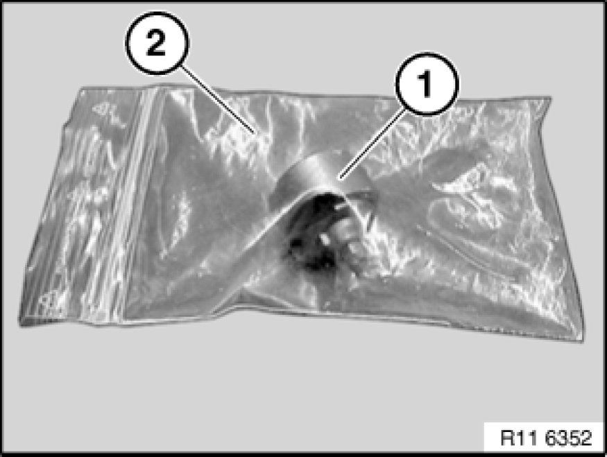
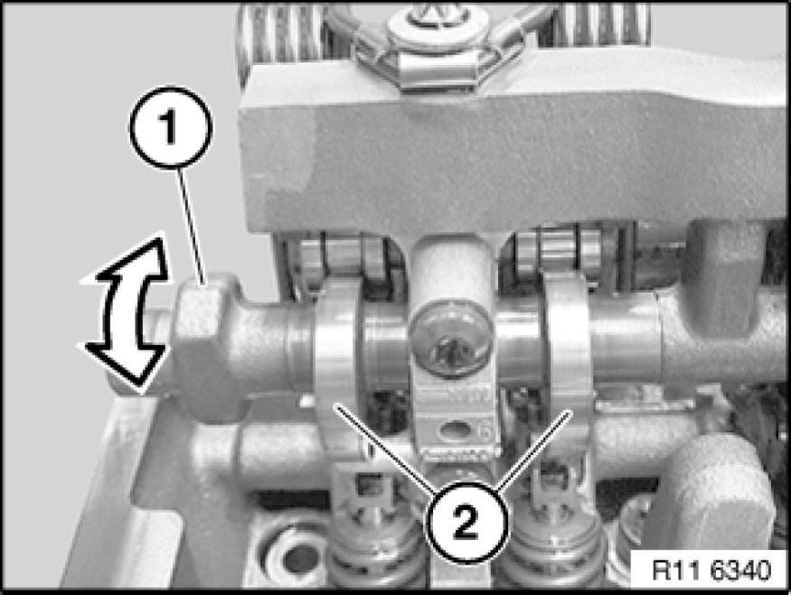
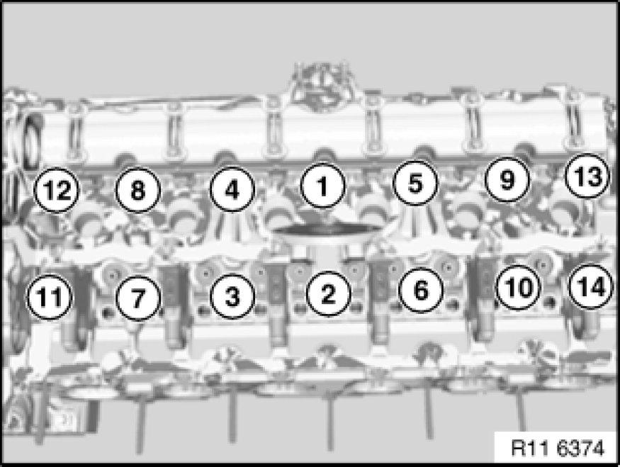

Removal and Replacement
11 12 100 - Removing and installing cylinder head (N52K)

Special tools required:
- 11 0 320 11 0 320 Removal and Installation Bracket
- 11 4 420 11 4 420 Torx Socket T50
- 11 4 430 11 4 430 Seal Plugs (2 X)
- 11 4 471 11 4 470 Cleaning Kit
- 11 4 472 11 4 470 Cleaning Kit
- 11 8 580 11 8 580 Wrench Socket Torx T60

Important!
Aluminium-magnesium materials.
No steel screws/bolts may be used due to the threat of electrochemical corrosion.
A magnesium crankcase requires aluminium screws/bolts exclusively.
Aluminium screws/bolts must be replaced each time they are released.
Aluminium screws/bolts are permitted with and without
color coding (blue).
For reliable identification:
Aluminium screws/bolts are not magnetic.
Jointing torque and angle of rotation must be observed without fail (risk of damage).

Necessary preliminary tasks:
- Remove exhaust system Service and Repair.
- Drain coolant Service and Repair
- Drain off engine oil Engine Oil
- Remove both exhaust manifolds Removing and Installing/Replacing Front Exhaust Manifold (M54/N52)
- Remove intake air manifold Service and Repair
- Detach coolant hoses from cylinder head
- Remove inlet and exhaust adjustment unit Removing and Installing/Replacing Inlet and Exhaust Adjustment Units (N52K)
Important!
Fit new cylinder head screws.
Do not wash off bolt coating.
There must be no coolant, water or engine oil in the pocket holes.
Risk of corrosion and cracking!
Release screws (1).
Unclip timing chain module (2) at junction (3) and remove towards top.
Set down timing chain.
Important!
If the timing chain is stowed in the gearcase, the crankshaft must no longer be rotated.
This would cause the timing chain on the crankshaft sprocket wheel to jam or jump.
Installation Note:
The timing chain is lifted out with a hook only during assembly.
Release bolts (2) for eccentric shaft sensor (1).
Remove eccentric shaft sensor (1) towards front.
Important!
Screw (1) is not magnetic and must be secured against falling down.
Release screw (1).
Remove magnet wheel (2) towards front.

Important!
Magnet wheel (1) is highly magnetic and must be protected against metal filings/borings.
After removing, place magnet wheel (1) in a plastic bag (2) with a seal.

Pretension eccentric shaft (1) upwards in direction of arrow.
Remove stop screw between 1st and 2nd cylinders.
Tightening torque 11 37 5AZ 11 37 Variable Valve Gear.
Note:
Bolt (2) can only be released when the timing chain module is pressed forward slightly.
Important!
Secure bolt (2) with a gripper against falling down.
Release screw (2).
Tightening torque 11 12 3AZ [1][2]11 12 Cylinder Head with Cover.
Release screws (1).
Tightening torque 11 12 4AZ [1][2]11 12 Cylinder Head with Cover.
Installation Note:
Replace aluminium screws.
Important!
Observe different bolt heads.
Release M10 cylinder head bolts (1) with special tool 11 8 580 11 8 580 Wrench Socket Torx T60.
Release M9 cylinder head bolts (2) with special tool 11 4 420 11 4 420 Torx Socket T50.
Note:
Picture shows inlet and exhaust camshafts removed.
Important!
Observe different M9 bolt lengths (1 and 3).
Release M9 cylinder head bolts (1 and 3) with special tool 11 4 420 11 4 420 Torx Socket T50.
Tightening torque 11 12 2AZ [1][2]11 12 Cylinder Head with Cover.
Release M10 cylinder head bolts (2) with special tool 11 8 580 11 8 580 Wrench Socket Torx T60 from outside inwards.
Tightening torque 11 12 1AZ [1][2]11 12 Cylinder Head with Cover.
Important!
All cylinder head bolts (1, 2 and 3) must be replaced.
Joining torque and angle of rotation must be observed without fail.
Risk of damage!
Secure special tool 11 0 320 11 0 320 Removal and Installation Bracket with existing cylinder head cover bolts (1).
Tightening torque 11 12 5AZ [1][2]11 12 Cylinder Head with Cover.
Important!
Removing and install cylinder head with a second person helping.
Weight of cylinder head with add-on parts is approx. 40 kg.
Do not rest cylinder head on sealing surface. Risk of damage to valves!

Insert special tool 11 4 430 11 4 430 Seal Plugs (2 X) into bores.
Remove coarse residues on sealing faces with special tool 11 4 471 11 4 470 Cleaning Kit from cylinder head and crankcase.
Important!
Do not use any metal-cutting tools.
Remove fine residues on sealing faces with special tool 11 4 472 11 4 470 Cleaning Kit from cylinder head and crankcase.
Important!
Do not use any metal-cutting tools.
There must be no coolant, water or engine oil in the pocket holes.
Risk of corrosion and cracking!
Clean all pocket holes.
Replace cylinder head gasket Service and Repair.

Important!
Observe sequence for tightening cylinder head bolts without fail.
Fit new cylinder head screws.
Insert cylinder head bolts (1 to 10) with special tool 11 8 580 11 8 580 Wrench Socket Torx T60.
Tightening torque 11 12 1AZ [1][2]11 12 Cylinder Head with Cover.
Insert cylinder head bolts (11 to 14) with special tool 11 4 420 11 4 420 Torx Socket T50.
Tightening torque 11 12 2AZ [1][2]11 12 Cylinder Head with Cover.
Note:
Picture shows inlet and exhaust camshafts removed.
Observe sequence for tightening cylinder head bolts without fail.
Important!
The 2nd torsion angle relates only to cylinder head bolts 1 to 10.
Installation Note:
- Tightening torque:
All cylinder head bolts 1 to 14 to 30 Nm
- 1st angle of rotation:
All cylinder head bolts 1 to 14 to 90°
- 2nd angle of rotation:
Only cylinder head bolts 1 to 10 to 90°
- 3rd angle of rotation:
All cylinder head bolts 1 to 14 to 45°
Insert bolts (1).
Tightening torque 11 12 4AZ [1][2]11 12 Cylinder Head with Cover.
Important!
Secure bolt (2) with a gripper against falling down.
Insert bolt (2).
Tightening torque 11 12 3AZ [1][2]11 12 Cylinder Head with Cover.
Installation Note:
Replace aluminium screws.

Assemble engine.